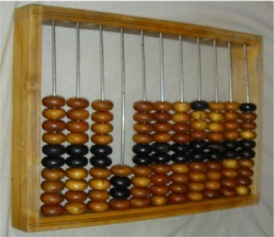
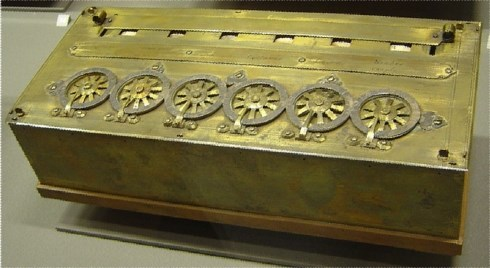
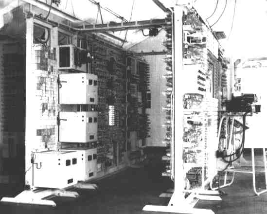
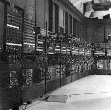
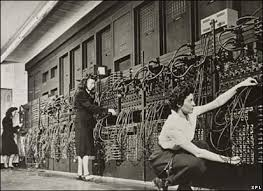

A História da Informática
A História do Computador
Ao contrário da maioria das grandes invenções da história, o computador não tem um inventor. Essa máquina surgiu e vem sendo aprimorada desde a Idade Antiga, passando por um processo evolutivo tão expressivo quanto sua importância para a sociedade contemporânea.
Tudo começou na necessidade dos povos antigos de realizar contagens (computar = contar). Assim, quando se chegou ao momento em que tais contagens não poderiam mais ser feitas apenas com os dedos ou pedras, foram sendo arquitetados novos dispositivos que pudessem desenvolver cálculos sem maiores trabalhos.
O primeiro invento dessa linhagem foi o ábaco, um aparelho mecânico constituído de hastes paralelas e contas (pequenas esferas) que poderiam ser movimentadas e, de acordo com sua posição, representava o número trabalhado. Esse dispositivo possibilitava cálculos de até 5 dígitos, e, quando utilizado com habilidade, desenvolvia contas tão rapidamente quanto uma calculadora moderna.
Depois do ábaco foram criados outros aparelhos, também analógicos, capazes de realizar contagens, como os ossos de napier, a pascalina (primeira calculadora mecânica do mundo), a máquina de Leibniz, o tear automático, a máquina de diferenças, a máquina analítica de Babbage, o tabulador automático, entre outros. Todos esses aparelhos surgiram por aperfeiçoamento, ou seja, quando um não realizava determinada tarefa, o próximo era criado a fim de suprir tal necessidade.
Em 1642, o matemático francês Bleise Pascal desenvolveu o que pode ser chamado de primeira calculadora mecânica da História, a Máquina de Pascal.
Seu funcionamento era baseado no uso de rodas interligadas que giravam na realização dos cálculos. A ideia inicial de Pascal era desenvolver uma máquina que realizasse as quatro operações matemáticas básicas, o que não aconteceu na prática, pois ela era capaz apenas de somar e subtrair. Por esse motivo, a tecnologia não foi muito bem acolhida na época. Alguns anos após a Máquina de Pascal, em 1672, o alemão Gottfried Leibnitz conseguiu o que Pascal não tinha conseguido: criar uma calculadora que efetuava a soma e a divisão, além da raiz quadrada.
A Segunda guerra mundial foi o incentivo que faltava para o desenvolvimento da tecnologia da Informação e o desenvolvimento dos computadores, visto que as máquinas estavam se tornando mais úteis em tarefas de desencriptação de mensagens inimigas e criação de novas armas mais inteligentes.
Entre os projetos desenvolvidos nesse período da 1ª geração da computação, o que mais se destacou foi o Mark I, no ano de 1944, criado pela Universidade de Harvard (EUA), e o Colossus, em 1943, criado por Allan Turing.
Sendo uma das figuras mais importantes da computação, Allan Turing foi recrutado para a Escola de Códigos e Criptogramas do governo em Bletchley Park, Buckinghamshire, onde uma equipe liderada por Tom Flowers, tinha sido incumbida de decifrar os códigos militares nazistas, um trabalho urgente e secreto, pois havia uma máquina alemã, denominada "Enigma", que gerava mensagens em código, supostamente indecifráveis. E seu código era constantemente trocado.
Turing e seus colegas construíram o "Colossus", um precursor dos computadores digitais, em Dollis Hill, ao norte de Londres. A máquina começou a funcionar em dezembro de 1943, era enorme e, ao invés de relés eletromecânicos, usava 1.500 válvulas eletrônicas, conseguindo processar cerca de 5.000 caracteres por segundo.
Ao final da II Guerra Mundial 10 computadores "Colossus" operavam na Grã-Bretanha decifrando também códigos japoneses e italianos. Após a vitória, Winston Churchill, o então primeiro-ministro inglês, ordenou que 8 Colossus fossem destruídos e que a existência dos outros dois fosse mantida em segredo.
A construção desta máquina foi considerado o ponto fundamental para o término precoce da Segunda Guerra Mundial, previsto para acontecer pelo menos um ano depois.
A máquina Colossus não é considerada como o primeiro computador, pois não era uma máquina universal (capaz de executar qualquer tarefa que lhe seja programada), por isso o ENIAC foi considerado como o primeiro computador construído.
No ano de 1946, ocorreu uma revolução no mundo da computação com o lançamento do computador ENIAC (“Electronic Numerical Integrator and Computer”), desenvolvido pelos cientistas norte-americanos John Eckert e John Mauchly. Esta máquina era em torno de mil vezes mais rápida que qualquer outra que existia na época.
O ENIAC foi anunciado como o primeiro computador elétrico digital eletrônico de grande escala, em 14 de fevereiro de 1946. O projeto era do Exército dos EUA e objetivava construir um computador para quebrar códigos de comunicação e realizar vários tipos de cálculos de artilharia, por exemplo, as trajetórias de mísseis com maior precisão, para ajudar as tropas aliadas durante a Segunda Guerra Mundial. O computador começou a ser construído em 1943, mas só foi terminado 3 meses após o final da Guerra.
Foi usado durante a guerra fria, contribuindo por exemplo no projeto da bomba de hidrogênio. No final de 1945, seu primeiro teste - cálculos para avaliar a exequibilidade da bomba de hidrogênio - impulsionou o desejo dos militares de desenvolver a nova máquina. O ENIAC só foi apresentado oficialmente em fevereiro de 1946 e pesava 28 toneladas, ocupava uma área de 72 m² na Universidade da Pensilvânia, de 9 x 30m, e queimava cerca de 150 kilowatts de energia (lembrar que um computador pessoal atual, com um monitor LCD, consome cerca de 100 watts de energia).
Mas os custos de sua manutenção e conservação eram muito altos, pois em média, a cada 5 minutos alguma das válvulas se queimava, tornando necessárias manutenções frequentes. Além disso, o calor gerado por elas necessitava de controle por um complexo sistema de refrigeração, além dos altos gastos com energia elétrica.
Em 1955 um raio paralisou a máquina, já obsoleta. Foi desmontado. Peças do ENIAC podem ser vistas em alguns museus, incluindo o Smithsonian em Washington DC, e onde foi construído, na "Moore School for Electrical Engineering" da Universidade da Pensilvânia. Mas o ENIAC era muito diferente dos computadores atuais, pois:
Este período de 1946 - 1959 é considerado como a 1ª geração da computação.
2ª geração da computação (1959 — 1964)
Na segunda geração, houve a substituição das válvulas eletrônicas por transístores, o que diminiu em muito o tamanho do hardware. A tecnologia de circuitos impressos também foi criada, evitando que os fios e cabos elétricos ficassem espalhados por todo lugar. É possível dividir os computadores desta geração em duas grandes categorias:
Supercomputadores e Minicomputadores.
Várias linguagens foram desenvolvidas para os computadores de segunda geração, como Fortran, Cobol e Algol. Assim, softwares já poderiam ser criados com mais facilidade. Muitos mainframes (modo como as máquinas dessa época são chamadas) ainda estão em funcionamento em várias empresas nos dias de hoje, como na própria IBM.
3ª geração da computação (1964 — 1970)
Os computadores desta geração foram conhecidos pelo uso de circuitos integrados, ou seja, permitiram que uma mesma placa armazenasse vários circuitos que se comunicavam com hardwares distintos ao mesmo tempo. Desta maneira, as máquinas se tornaram mais velozes, com um número maior de funcionalidades. Nesta geração, o preço dos equipamentos também diminuiu consideravelmente.
No final deste período, houve uma grande preocupação com a falta de qualidade no desenvolvimento de softwares, visto que grande parte das empresas estava focada somente no hardware.
4ª geração da computação (1970 até os dias atuais)
A quarta geração é conhecida pelo advento dos microprocessadores e computadores pessoais, com a redução drástica do tamanho e preço das máquinas. As CPUs atingiram o incrível patamar de bilhões de operações por segundo, permitindo que muitas tarefas fossem implementadas.
Os circuitos acabaram se tornando ainda mais integrados e menores, o que permitiu o desenvolvimento dos microprocessadores. Quanto mais o tempo foi passando, mais fácil foi comprar um computador pessoal. Nesta era, os softwares e sistemas operacionais se tornaram tão importantes quanto o hardware.